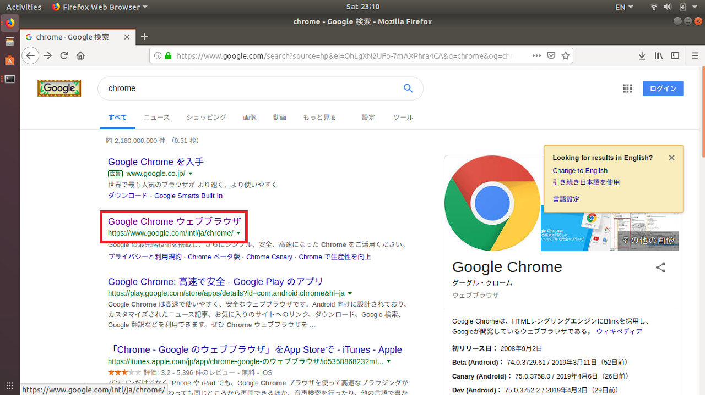
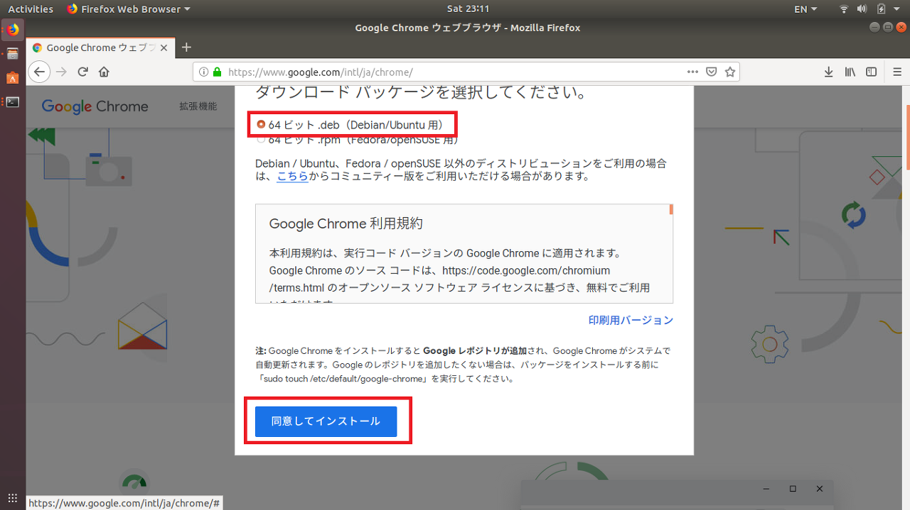
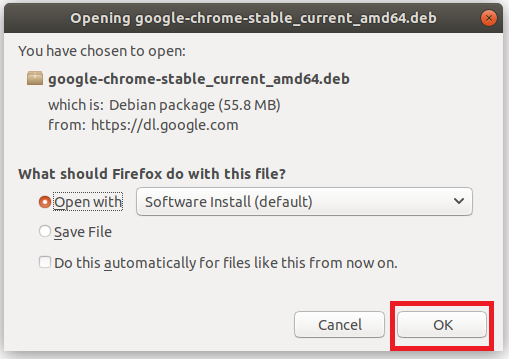
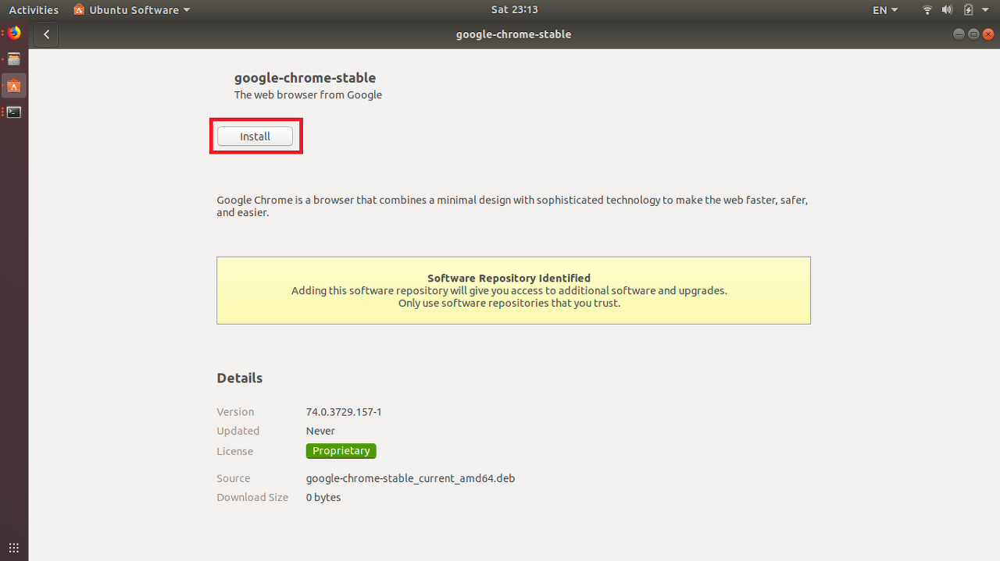
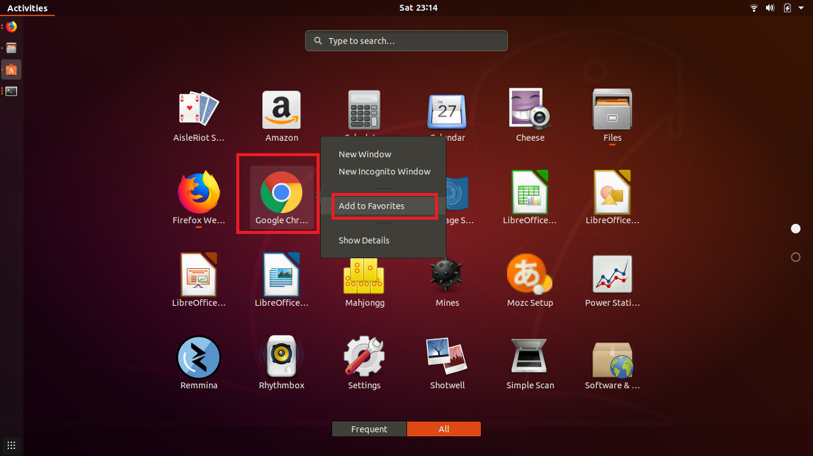

[Ubuntu] Chromeをインストールする方法
こんにちは。明月です。
Linuxには大きい幅で種類が２つがありますね。RedHat系のRedHatとCentOSとDebian系のUbuntuがありますね。
RedHat系はほとんどサーバOSで使います。一般、デスクトップOSモードもありますが、UIが可能なアプリも少ないし使用にくいですね。でも、プロセスやフリージング(パソコンが凍る現象)が少ないのでサーバとして合うと思います。
Debian系のUbuntuはCentOSより安定性が落ちるけれど、互換アプリ、UIが可能なアプリが多いし、インストールがしやすいです。
コミュニティーも大きいので問題がある時にすぐ調べることも出来ます。
普通はデスクトップでWindowを使いますが、ライセンス費用がかかるので安くパソコンを運用したいならこのUbuntuもいいではないかと思います。
筆者はパソコンが何台にありますが、Windowは一台でその後は全てubuntuですね。
ubuntuは初期ブラウザでfirefoxがインストールされています。firefoxもいいブラウザですが、最近は多いウェブサイトがchromeでUIデザインが合わせていますのでchromeもインストールする必要がありますね。
先にGoogleのchromeページに接続します。

多分、ubuntuで接続するとLinux系のインストールができるファイルがでます。

そしてWindow環境みたいにダウンロードボタンを押下すると選択画面が出ます。rpmはyumでインストールすることで(実はrpmはrpmでインストールしなければならないですが、yumでもインストールができます。)debがubuntu環境でインストールするファイルなのでダウンロードしましょう。

ダウンロードが終われば実行します。そしたらubuntu software管理ウィンドウが開きますね。

ここでインストールボタンを押下してインストールしましょう。

インストールが完了したらluncher(画面の左下)をクリックするとchromeがインストールされたことを確認できます。Add to favoritesをクリックしてDockに固定ができます。
- [Ubuntu] PHPをインストール、Composer設定する方法2019/11/13 07:32:21
- [Ubuntu] テーマ(Arc)を変更する方法(tweak)2019/11/12 07:32:13
- [Ubuntu] Apache2をインストールする方法2019/11/11 07:28:28
- [Ubuntu] 「acquire the dpkg frontend lock」のエラーを解決方法2019/11/10 22:19:34
- [Ubuntu] JavaインストールとEclipseをインストールする方法2019/11/08 07:29:55
- [Ubuntu] MariaDB(Mysql)をインストールする方法2019/11/07 07:50:58
- [Ubuntu] Chromeをインストールする方法2019/11/06 19:48:19
- [CentOS] YUMについて、YUMが出来ない場合処理方法2019/11/05 07:17:58
- [CentOS] MariaDB(Mysql)をインストール2019/11/04 18:35:10
- [CentOS] FTPインストールする方法(vsftpd)2019/11/01 07:29:57
- [CentOS] SAMBAインストール方法2019/10/30 07:38:57
- [CentOS] PHPインストールする方法2019/10/29 20:09:03
- [CentOS] ApacheとTomcatの連携2019/10/29 07:28:33
- [CentOS] Tomcat インストール方法2019/10/28 22:38:56
- [CentOS] Java インストール2019/10/28 00:22:32
- [Python] 02. データタイプ、変数宣言そしてコメントする方法2020/05/26 18:16:52
- [Python] 01. Python3をインストールする方法(Anacondaインストール)2020/05/25 19:02:44
- [Java] HttpConnectionを利用してウェブページを取得する方法2020/05/20 23:53:24
- [Java] Jsoupを利用してXMLファイル(HTML)を扱う方法2020/05/19 19:32:21
- [C#] 非同期ソケット通信(IOCP)-APMパターン2020/05/18 18:45:37
- [C#] 非同期ソケット通信(IOCP)-EAPパターン2020/05/15 19:31:02
- [C#] ソケット(Socket)通信をする方法2020/05/13 17:37:13
- [C#] NPOIを利用してExcelを読み込んで出力する方法2020/05/08 10:43:52
- [C#] NPOIライブラリを利用してエクセルファイルを生成する方法2020/05/07 01:49:01
- [C#] Geckoライブラリを利用してウェブスクレイピングする方法2020/05/05 00:52:26
- [C#] PDFを作成する方法(iTextSharp)2020/05/03 10:22:40
- [C#] シリアライズ(Serialization)をする方法2020/04/30 19:32:04
- [C#] dynamicタイプの動的パラメータ-DynamicObject(WinFormでASP.MVCのViewBagオブジェクトを使用する方法)2020/04/29 22:41:32
- [C#] Stringの補間式(interpolation)2020/04/27 20:39:57
- [C#] Newtonsoft.JSONライブラリを利用してJsonデータ構造を扱う方法2020/04/23 20:19:53